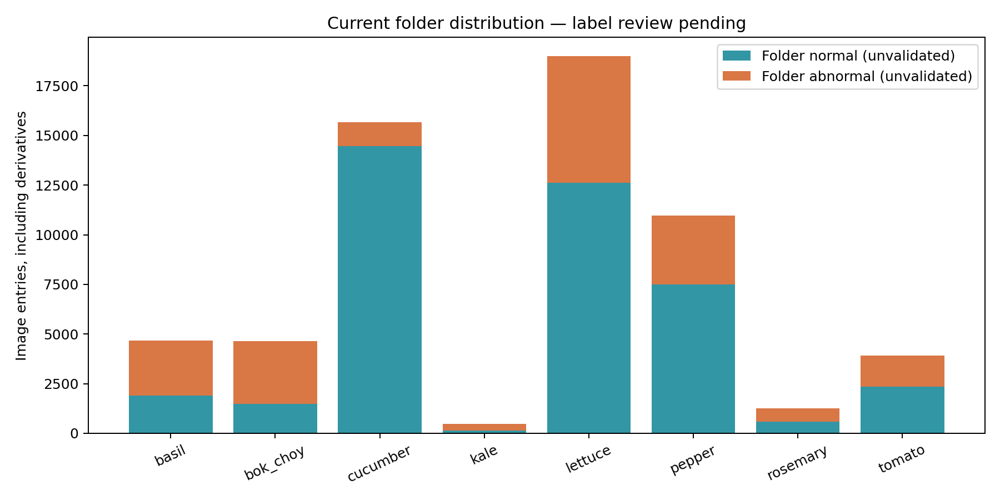
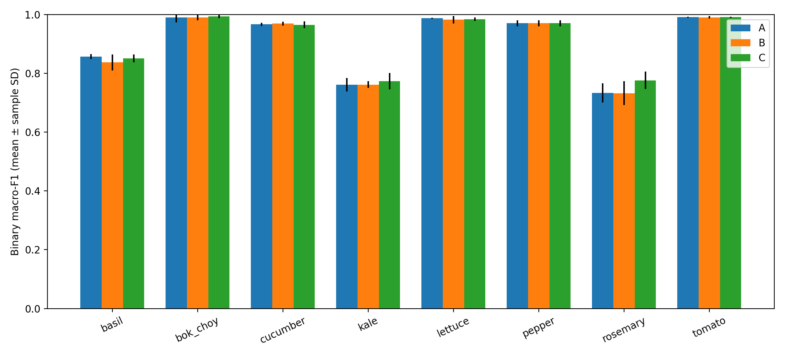
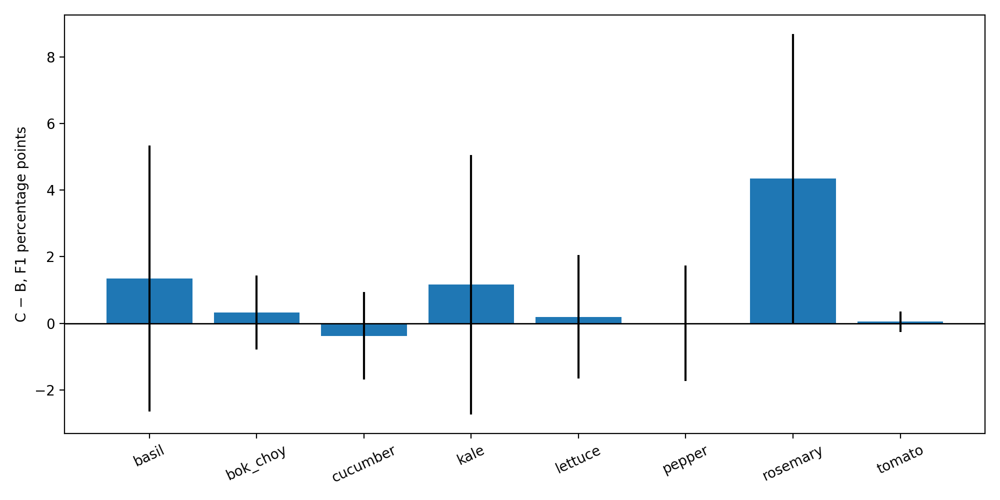
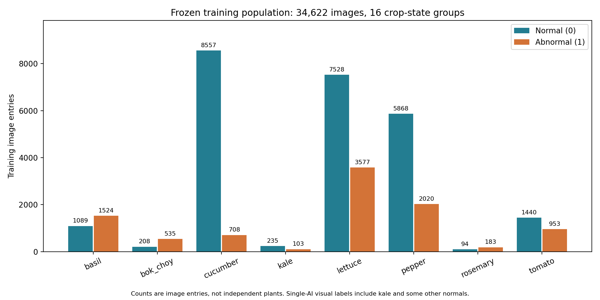

실험 ID: 20261016T031000_KST_crop8_effb0_c901e829
생성 시각: 2026-10-15T22:46:08.150965+00:00
8종 모두 필수. 라벨·그룹 검토 및 8종 고정 분할 완료. 본실험 완료 9/9회. 합성 입력 검사와 시간 시나리오는 연구 분류 성능이 아닙니다.
사용자가 모든 판단을 Codex에 위임한 지시에 따라 출처 검증과 실제 이미지 검토를 새 manifest에 기록했습니다. 케일은 WUR 원본의 10일차·20일차를 직접 검토해 정상 외관 또는 눈에 보이는 잎 조직 소실로 새 주석을 만들었습니다. 같은 개체의 모든 날짜는 한 분할에 묶었습니다. 빈 라벨이나 폴더명으로 정답을 추정하지 않았습니다.
케일 주석은 단일 AI 육안 검토이며 식물병리 전문가나 병원균 검사로 검증된 정답이 아닙니다. 손상 원인·병명을 확정하지 않습니다. 품종·생육 시기·촬영 단계와 상태가 연관된 한계를 결과 해석에 반영해야 합니다. 공개 이미지의 서로 다른 촬영 그룹은 서로 다른 생물학적 개체임을 완전히 증명하지 못하므로 표의 그룹 수를 독립 개체 수로 단정하지 않습니다.
{
"at": "2026-10-15T19:47:46.205841+00:00",
"inventory_entries": 66993,
"included_entries": 56393,
"excluded_entries": 10600,
"source_files_modified": 0,
"eight_crops_retained": true,
"expert_health_labels_claimed": false,
"counts": [
{
"crop": "basil",
"binary_label": 0,
"included_entries": 1856,
"leakage_groups": 496
},
{
"crop": "basil",
"binary_label": 1,
"included_entries": 2738,
"leakage_groups": 606
},
{
"crop": "bok_choy",
"binary_label": 0,
"included_entries": 364,
"leakage_groups": 276
},
{
"crop": "bok_choy",
"binary_label": 1,
"included_entries": 1599,
"leakage_groups": 238
},
{
"crop": "cucumber",
"binary_label": 0,
"included_entries": 14468,
"leakage_groups": 478
},
{
"crop": "cucumber",
"binary_label": 1,
"included_entries": 1200,
"leakage_groups": 909
},
{
"crop": "kale",
"binary_label": 0,
"included_entries": 372,
"leakage_groups": 233
},
{
"crop": "kale",
"binary_label": 1,
"included_entries": 179,
"leakage_groups": 135
},
{
"crop": "lettuce",
"binary_label": 0,
"included_entries": 12326,
"leakage_groups": 885
},
{
"crop": "lettuce",
"binary_label": 1,
"included_entries": 5828,
"leakage_groups": 961
},
{
"crop": "pepper",
"binary_label": 0,
"included_entries": 7489,
"leakage_groups": 106
},
{
"crop": "pepper",
"binary_label": 1,
"included_entries": 3484,
"leakage_groups": 230
},
{
"crop": "rosemary",
"binary_label": 0,
"included_entries": 194,
"leakage_groups": 176
},
{
"crop": "rosemary",
"binary_label": 1,
"included_entries": 378,
"leakage_groups": 114
},
{
"crop": "tomato",
"binary_label": 0,
"included_entries": 2350,
"leakage_groups": 2180
},
{
"crop": "tomato",
"binary_label": 1,
"included_entries": 1568,
"leakage_groups": 1425
}
]
}
| 작물 | 상태 | 분할 | 이미지 | 검토한 누출 방지 그룹 | 평가 대표 수 |
|---|---|---|---|---|---|
| basil | 0 | train | 1089 | 297 | 0 |
| basil | 0 | validation | 432 | 98 | 98 |
| basil | 0 | test | 330 | 101 | 101 |
| basil | 1 | train | 1524 | 343 | 0 |
| basil | 1 | validation | 555 | 125 | 125 |
| basil | 1 | test | 658 | 138 | 138 |
| bok_choy | 0 | train | 208 | 170 | 0 |
| bok_choy | 0 | validation | 69 | 54 | 54 |
| bok_choy | 0 | test | 67 | 52 | 52 |
| bok_choy | 1 | train | 535 | 139 | 0 |
| bok_choy | 1 | validation | 241 | 47 | 47 |
| bok_choy | 1 | test | 229 | 52 | 52 |
| cucumber | 0 | train | 8557 | 273 | 0 |
| cucumber | 0 | validation | 3273 | 101 | 101 |
| cucumber | 0 | test | 2617 | 104 | 104 |
| cucumber | 1 | train | 708 | 545 | 0 |
| cucumber | 1 | validation | 279 | 189 | 189 |
| cucumber | 1 | test | 203 | 175 | 175 |
| kale | 0 | train | 235 | 149 | 0 |
| kale | 0 | validation | 71 | 43 | 43 |
| kale | 0 | test | 66 | 41 | 41 |
| kale | 1 | train | 103 | 81 | 0 |
| kale | 1 | validation | 38 | 27 | 27 |
| kale | 1 | test | 38 | 27 | 27 |
| lettuce | 0 | train | 7528 | 546 | 0 |
| lettuce | 0 | validation | 1434 | 163 | 163 |
| lettuce | 0 | test | 3329 | 176 | 176 |
| lettuce | 1 | train | 3577 | 578 | 0 |
| lettuce | 1 | validation | 1202 | 215 | 215 |
| lettuce | 1 | test | 854 | 168 | 168 |
| pepper | 0 | train | 5868 | 75 | 0 |
| pepper | 0 | validation | 900 | 12 | 12 |
| pepper | 0 | test | 720 | 19 | 19 |
| pepper | 1 | train | 2020 | 136 | 0 |
| pepper | 1 | validation | 701 | 44 | 44 |
| pepper | 1 | test | 740 | 50 | 50 |
| rosemary | 0 | train | 94 | 89 | 0 |
| rosemary | 0 | validation | 53 | 41 | 41 |
| rosemary | 0 | test | 47 | 46 | 46 |
| rosemary | 1 | train | 183 | 57 | 0 |
| rosemary | 1 | validation | 111 | 32 | 32 |
| rosemary | 1 | test | 84 | 25 | 25 |
| tomato | 0 | train | 1440 | 1330 | 0 |
| tomato | 0 | validation | 453 | 420 | 420 |
| tomato | 0 | test | 453 | 430 | 430 |
| tomato | 1 | train | 953 | 858 | 0 |
| tomato | 1 | validation | 315 | 287 | 287 |
| tomato | 1 | test | 298 | 280 | 280 |
새 육안 주석과 실제 이미지 근거 · 전체 포함·제외 판정 · 고정 분할 manifest
이미지 항목 60,593개, 고유 SHA-256 58,788개, 디코딩 실패 0개. 고유 SHA 수는 독립 촬영 표본 수가 아닙니다.
| 작물 | 현재 상태 후보(0/1) | 파일 항목 | 고유 SHA | 파일명 후보 계열 |
|---|---|---|---|---|
| basil | 0 | 1886 | 1886 | 514 |
| basil | 1 | 2782 | 2782 | 630 |
| bok_choy | 0 | 1491 | 872 | 314 |
| bok_choy | 1 | 3154 | 2114 | 418 |
| cucumber | 0 | 14468 | 14448 | 14468 |
| cucumber | 1 | 1200 | 1190 | 1200 |
| kale | 0 | 146 | 146 | 58 |
| kale | 1 | 329 | 264 | 200 |
| lettuce | 0 | 12625 | 12623 | 11922 |
| lettuce | 1 | 6368 | 6344 | 4723 |
| pepper | 0 | 7489 | 7488 | 7489 |
| pepper | 1 | 3484 | 3461 | 3481 |
| rosemary | 0 | 582 | 582 | 209 |
| rosemary | 1 | 671 | 671 | 213 |
| tomato | 0 | 2350 | 2350 | 2350 |
| tomato | 1 | 1568 | 1568 | 1568 |

케일 v5 흰가루병 129장은 저자 제공 PlantVillage의 Squash___Powdery_mildew 사진과 일대일로 대응하여 호박으로 확인됐습니다. 새 manifest의 교정 사항이며 기존 이미지는 수정하지 않았습니다. 해당 이미지 ID·SHA-256은 케일 학습 포함을 차단합니다. 케일을 제외한 7종 본실험으로 대체하지 않습니다.
PlantVillage 원 출처 · 129장별 대응·교정 근거 · 정답 확정 전 전체 검토 manifest
{
"created_at": "2026-10-15T19:17:16.941190+00:00",
"misassigned_kale_images": 129,
"verified_source_crop": "Squash",
"primary_source": "https://github.com/spMohanty/PlantVillage-Dataset/tree/master/raw/color/Squash___Powdery_mildew",
"method": "Perceptual candidates were followed by one-to-one whole-image pixel agreement and visual photograph comparison.",
"worst_pixel_mae_0to1": 0.032450856726154005,
"minimum_full_image_correlation": 0.9699696464575083,
"reference_photos_admitted_to_training": 0,
"original_files_changed": 0,
"eight_crop_research_still_requires_valid_kale_abnormal_images": true
}
Roboflow raw ZIP에서도 케일 v3 클래스 정의가 비어 있고 115개 라벨이 비어 있습니다. v4에는 빈 라벨 57개가 있습니다. v2의 객체 클래스 이름은 59이며, 이 문자열만으로 정상 의미를 확정할 수 없습니다.
별도 raw 케일 자료의 출처 설명은 320개체의 20일 반복 촬영, 총 6,400장입니다. 정상·질병 라벨 데이터셋은 아닙니다. 로컬 ZIP의 디렉터리 검증은 실패했고, 기존 추출본을 따로 검사했습니다. 실제 사진을 검토한 항목만 새 주석 근거를 남겨 포함했습니다.
Wageningen University 원출처 · 케일·청경채 충돌 및 라벨 검토 이미지 · raw 케일 대표 이미지
{
"candidate_images": 6400,
"unique_sha256": 6400,
"decode_errors": 0,
"candidate_plant_ids": 320,
"source_url": "https://research.wur.nl/en/datasets/top-view-images-of-kale-brassica-oleracea/",
"source_doi": "10.5281/zenodo.4315436",
"source_describes": "320 plants, two varieties, 20 days; no binary disease labels",
"local_archive_status": "Python ZIP directory validation fails; extracted files audited separately, archive equivalence not certified",
"training_images_added": 0,
"health_labels_assigned": 0,
"duration_seconds": 392.5357475259807,
"next_requirement": "Verify plant identity across days and judge visible normal/abnormal status; do not label all growth images normal."
}
불명확한 기존 케일 폴더는 제외하고 검토된 raw 사진으로 대체했습니다. 로즈마리·청경채 정상 후보는 검토표의 실제 사진을 확인했고, 충돌·모호한 항목은 제외했습니다. 16개 그룹 모두 학습에 존재하고 검증·테스트 각각 10개 이상 누출 방지 그룹을 확보하는 검사를 적용했습니다.
고정 그룹 분할, A/B/C 이미지별 가중 CE, 이미지→2로짓 EfficientNet-B0, 재개 체크포인트, 0.5 임계값 평가, 결과 집계, 원본 보호 검사, 해시 검증 전송 코드를 구현했습니다.
18시간은 완료 목표이며 자동 중단 제한이 아닙니다. 시간이 지나도 미완료 작업을 계속합니다. 반복 JPEG 디코딩 비용을 줄이기 위해 실험 디렉터리에 EXIF 방향 반영·짧은 변 320픽셀 PNG 캐시를 생성했습니다. 이는 손실 없는 PNG 저장이라는 뜻이며, 320픽셀 리사이즈 자체는 새 공통 전처리입니다. 병변·크롭 품질 검사 결과는 reproducibility의 전처리 점검 기록에 남겼습니다.
{
"created_at": "2026-10-15T18:56:11.301787+00:00",
"results": [
{
"pipeline": "training_augmentation",
"input_entries": 4096,
"measured_images": 3584,
"measured_seconds": 3.062864003935829,
"images_per_second": 1170.1466324964163,
"total_seconds_including_startup": 4.084457596996799,
"measured_batches": 56,
"batch_size": 64,
"workers": 6
},
{
"pipeline": "evaluation_preprocessing",
"input_entries": 4096,
"measured_images": 3584,
"measured_seconds": 2.849208559957333,
"images_per_second": 1257.8931743956541,
"total_seconds_including_startup": 3.5659436610294506,
"measured_batches": 56,
"batch_size": 64,
"workers": 6
}
],
"images_selected_from": "current original_split=train entries only, shuffled seed24680",
"research_training_performed": false,
"labels_used": false,
"input_root": "/home/user/data/ComputerVision_data/processed",
"ready_cache_subset": true,
"limitations": "One 4096-image sample; filesystem cache state and final source mix may differ. No model overlaps this IO diagnostic."
}
{
"checked_at": "2026-10-15T20:04:22.599351+00:00",
"run": 17,
"failures": 0,
"errors": 0,
"skipped": 0,
"passed": true,
"code_sha256": "6ff3ca71d567a5a2d629cebfc6dd1fe2d89b364f420ff89eefe3e80b167a0329"
}
본실험 준비 상태 · 테스트 상세 · 전용 환경 · 합성 GPU 동작 검사 · 실행·재현 절차
근거 검토 → 새 manifest 교정 → 그룹 분할 검증 → 실제 데이터 소수 배치·처리량 검사 → 공통 설정 확정 → A/B/C×3시드 → 고정 테스트·논문 결과. 각 실행의 실제 상태는 runs와 evaluation의 완료 기록을 확인합니다.
입력 파일은 읽기 전용입니다. 제외·재라벨링은 실험 manifest로만 표현합니다. 서버 실험 파일은 자동 삭제하지 않습니다. 최종 보관 위치는 사용자 최신 지시에 따라 /home/user/ComputerVision_ai/입니다. 현재 세션의 파일시스템 쓰기 제한으로 목적지 복사는 미완료이며, 모든 결과는 이 서버 실험 폴더에 보존 중입니다.
| 조건 | 작물 평균 macro-F1 | 전체 pooled macro-F1 | 정확도 |
|---|---|---|---|
| A | 90.73 ± 0.51% | 95.31 ± 0.12% | 95.31 ± 0.12% |
| B | 90.44 ± 0.48% | 94.93 ± 0.30% | 94.94 ± 0.29% |
| C | 91.32 ± 0.13% | 95.36 ± 0.16% | 95.36 ± 0.16% |
3시드 평균 ± 표본 SD. 통계적 유의성을 뜻하지 않습니다.


9회 30 epoch 학습·고정 테스트 완료. 종료 후 원본 66,993항목 전체 SHA 검사 통과, 변경 사항 0. 주지표·pooled 지표·평균·표본 SD·대응 차이를 원시 예측에서 독립 검증했습니다.
최종 목적지 복사는 읽기 전용 제한으로 미완료입니다. 서버 묶음 검증과 목적지 보관 완료는 구분합니다.
통합 논문 초안 · 실측 해석·오분류·결론 · 오분류와 정답 근거 · 재현·추론 안내 · 최종 검증 상태
기존 폴더 기준 분포 그림은 검토 전 라벨 집계입니다. 최종 학습 분포는 아래 그림과 frozen_training_distribution.csv를 사용합니다.

일부 청경채·로즈마리 정상 주석과 새 케일 주석은 단일 AI 시각 판정입니다. 독립 전문가 검증이나 새 환경 일반화의 증거로 해석하지 않습니다.